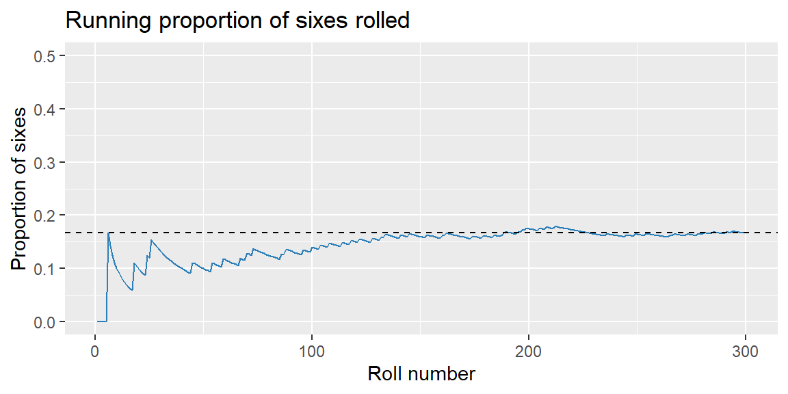

Module 1 was about describing what a dataset shows. Starting this module, we shift toward quantifying uncertainty, the fourth step of the analytics decision cycle from Chapter 2. Before we can build a confidence interval, run a hypothesis test, or interpret a forecast interval (all coming in the next several weeks), we need a shared vocabulary for talking about chance itself. That vocabulary is probability.
A probability is a number between 0 and 1 that measures how likely an event is. A probability of 0 means the event never happens; a probability of 1 means it’s certain; everything in between describes a degree of likelihood.
When a marketing manager says “there’s roughly a 20% chance this campaign hits its target,” or a plant manager says “about 3% of units coming off this line are defective,” they are making probability statements, usually without realizing they’re doing statistics.
4.2 Basic Probability Rules
Experiments, Outcomes, and Sample Spaces
Probability starts with an experiment: a repeatable situation whose result isn’t known in advance. Rolling a die, whether a sales call converts, and whether a manufactured unit passes inspection are all experiments in this sense. Each trial produces an outcome, and the set of every possible outcome is the sample space, usually written \(S\).
ExampleExample 2.1: A simple sample space
A quality inspector checks a single unit coming off a production line. The outcome is either pass or fail, so the sample space is \[
S = \{\text{pass}, \text{fail}\}
\] If instead the inspector rolled a six-sided die to decide which of six production lines to audit next, the sample space would be \(S=\{1,2,3,4,5,6\}\).
A sample space can be small and finite (pass/fail) or effectively infinite (the exact weight of a shipped package, measured to any precision). Identifying \(S\) matters because every probability we compute is relative to it.
Events and the Classical Definition of Probability
An event is any subset of the sample space—a single outcome, or several grouped together. When every outcome in \(S\) is equally likely, the probability of an event \(A\) is
\[
P(A) = \frac{\text{number of outcomes in } A}{\text{number of outcomes in } S}
\]
ExampleExample 2.2: Law of Large Numbers with a die
Suppose a training simulator rolls a fair die to assign trainees to one of six workstations, and we want to confirm workstation 6 really does get selected about \(1/6 \approx 16.7\%\) of the time. We simulate 300 rolls in R and track the running proportion of sixes as more rolls accumulate:
library(tidyverse)set.seed(2025)rolls <-sample(1:6, size =300, replace =TRUE)running_prop_six <-cumsum(rolls ==6) /seq_along(rolls)ggplot(tibble(roll =seq_along(rolls), prop = running_prop_six), aes(x = roll, y = prop)) +geom_line(color ="#2c7fb8") +geom_hline(yintercept =1/6, linetype =2) +labs(title ="Running proportion of sixes rolled", x ="Roll number", y ="Proportion of sixes") +ylim(0, 0.5)

Early on, the running proportion swings around. As more rolls accumulate, it settles near the theoretical value of \(1/6\). This is the Law of Large Numbers: as the number of trials grows, the observed proportion of an outcome converges to its true probability. It’s also why a business shouldn’t judge a process from a handful of observations—three failed sales calls in a row doesn’t mean your close rate has actually changed.
The Complement Rule
The complement of event \(A\), written \(A^c\), is everything in \(S\) that is not in \(A\). Since \(A\) either happens or it doesn’t, \[
P(A^c) = 1 - P(A)
\]
This rule is the fastest route to “at least one” problems, which come up constantly in business (at least one customer complains, at least one part in a shipment is defective, at least one lead converts).
ExampleExample 2.3: At least one sale
A sales rep has a 40% chance of closing any individual call, and calls are independent of one another. Across 4 calls this afternoon, what is the probability of at least one sale?
Let \(A\) = “at least one sale.” Its complement, \(A^c\), is “no sales in 4 calls.” Suppose the probability that no sales in 4 calls is known to be 0.1296, that is, \[
P(A^c) = 0.1296
\] Then, the probability of at leas one sale is \[
P(A) = 1 - 0.1296 = 0.8704
\] Four calls gives the rep better than 87% odds of closing at least one sale.
The Addition Rule (Unions)
The union of events \(A\) and \(B\), written \(A \cup B\), contains outcomes in \(A\)or\(B\) (or both). The intersection, \(A \cap B\), contains outcomes in both. The general addition rule is \[
P(A \cup B) = P(A) + P(B) - P(A \cap B)
\] We subtract the intersection because it would otherwise be counted twice, once in \(P(A)\) and once in \(P(B)\).
ExampleExample 2.4: Customer channel opt-in
A retailer surveys 200 customers about how they’d like to receive promotions:
120 opt in to email.
90 opt in to SMS.
60 opt in to both.
Let \(E\) = “opts into email” and \(M\) = “opts into SMS.” Then \[
P(E)=120/200=0.60
\]\[
P(M)=90/200=0.45
\] and \[
P(E \cap M) = 60/200 = 0.30
\] The share of customers reachable through either channel is \[
P(E \cup M) = 0.60 + 0.45 - 0.30 = 0.75
\] So 75% of surveyed customers can be reached by email, SMS, or both, useful directly for planning campaign reach.
Mutually Exclusive Events
If \(A\) and \(B\) share no outcomes, they’re mutually exclusive (or disjoint), \(P(A \cap B) = 0\), and the addition rule simplifies to \(P(A \cup B) = P(A) + P(B)\).
ExampleExample 2.5: Warranty claim reasons
A manufacturer’s warranty claims are logged with exactly one reason code. Historically, 8% of claims are coded manufacturing defect and 5% are coded shipping damage; no claim ever receives both codes, since each claim is assigned a single cause. The probability a randomly selected claim is either a defect or shipping-damage claim is \[
P(\text{defect} \cup \text{damage}) = 0.08 + 0.05 = 0.13
\]
Probability from Contingency Tables
A contingency table cross-tabulates two categorical variables by count. Dividing each cell by the table’s total gives an estimated probability—this is the Law of Large Numbers again, applied to real data instead of a simulation.
ExampleExample 2.6: A fraud-detection screen
An e-commerce company’s automated system flags transactions it suspects are fraudulent. Out of 10,000 transactions last month:
Flagged
Not flagged
Total
Actually fraudulent
180
20
200
Not fraudulent
980
8,820
9,800
Total
1,160
8,840
10,000
Dividing each count by 10,000 gives estimated probabilities. For instance, the probability a transaction is actually fraudulent is \[
P(\text{fraud}) = \frac{200}{10000} = 0.02
\] and the probability a transaction is both fraudulent and flagged is \[
P(\text{fraud} \cap \text{flagged}) = \frac{180}{10000} = 0.018
\] Using the addition rule, the probability a transaction is fraudulent, flagged, or both is \[
P(\text{fraud} \cup \text{flagged}) = \frac{200}{10000} + \frac{1160}{10000} - \frac{180}{10000} = \frac{1180}{10000} = 0.118
\] We’ll return to this same table in the next section to ask a sharper question: given that a transaction was flagged, how likely is it to actually be fraud?
Computing Probabilities in R and Excel
ExampleExample 2.7: Contingency table probabilities in R and Excel
In R, if your data is one row per transaction with logical columns fraud and flagged, these probabilities are just proportions of logical vectors:
mean(fraud) # P(fraud)mean(fraud & flagged) # P(fraud and flagged)mean(fraud | flagged) # P(fraud or flagged)
In Excel, the equivalent uses COUNTIFS() divided by the total row count:
=COUNTIFS(fraud_range, TRUE, flagged_range, TRUE) / COUNTA(id_range) ' P(fraud and flagged)
Either way, the underlying idea is identical to Example 2.6: count the outcomes that satisfy the event, and divide by the total.
4.3 Conditional Probability and Independence
Conditional Probability
Often we want the probability of an event given that another has already occurred. If \(P(A) > 0\), the conditional probability of \(B\) given \(A\) is \[
P(B \mid A) = \frac{P(A \cap B)}{P(A)}
\] Conditioning on \(A\) shrinks the sample space down to just the outcomes where \(A\) happened, and asks what fraction of those also satisfy \(B\).
ExampleExample 2.8: How trustworthy is a fraud flag?
Return to the fraud-detection table from Example 2.6. The company’s fraud analysts don’t really care about \(P(\text{fraud})\) in isolation—they want to know: given a transaction was flagged, what’s the chance it’s actually fraud?\[
\begin{align*}
P(\text{fraud} \mid \text{flagged}) &= \frac{P(\text{fraud} \cap \text{flagged})}{P(\text{flagged})}\\
&= \frac{180/10000}{1160/10000}\\
&= \frac{180}{1160}\\
&\approx 0.155
\end{align*}
\] So only about 15.5% of flagged transactions are actually fraudulent, the other 84.5% are false alarms that a human analyst still has to review. This is a completely general lesson, not specific to fraud: when the thing you’re looking for is rare, most flags will be false positives, even with a reasonably good detection system. The same logic applies to churn-risk flags, defect-detection sensors, and screening tests of any kind.
Rearranging the conditional probability formula gives the multiplication rule, useful for finding the probability that two events both happen: \[
P(A \cap B) = P(A)\,P(B \mid A) = P(B)\,P(A \mid B)
\]
Independent vs. Dependent Events
Events \(A\) and \(B\) are independent if knowing \(A\) occurred doesn’t change the probability of \(B\): \[
P(B \mid A) = P(B)
\] When events are independent, the multiplication rule simplifies to \(P(A \cap B) = P(A)\,P(B)\). If conditioning does change the probability, the events are dependent.
ExampleExample 2.9: Independent vs. dependent draws
Independent case. A call center randomly routes each incoming call to one of several agents, independent of any previous call. If Agent Lee handles 20% of calls, knowing that Agent Lee handled the last call tells you nothing about who handles the next one.
Dependent case. A batch of 10 components contains 4 that are defective. Two components are pulled at random, without replacement, for inspection. Let \(D_1\) = “first component is defective” and \(D_2\) = “second component is defective.” \[
P(D_1) = 4/10 = 0.40
\] If the first component drawn was defective, only 3 defectives remain among 9 components: \[
P(D_2 \mid D_1) = 3/9 \approx 0.333
\] Because \(P(D_2 \mid D_1) \ne P(D_2)\), the draws are dependent—removing one component changes the composition of what’s left. Had the components been replaced after inspection (or had the batch been much larger relative to the sample), the draws would be approximately independent.
NoteMutually exclusive is not the same as independent
These two ideas are easy to mix up, but they’re nearly opposite. If \(A\) and \(B\) are mutually exclusive, \(P(A \cap B) = 0\). If \(A\) and \(B\) are independent, \(P(A \cap B) = P(A)P(B)\), which is only zero if \(P(A)=0\) or \(P(B)=0\). So two events with positive probability cannot be both mutually exclusive and independent: if \(A\) happening rules out \(B\) entirely, that’s about as dependent as two events can be.
4.4 Bayes’ Rule
Example 2.8 worked because we had a full contingency table to count from. Often, though, you don’t have the table—you only know how well a detection system performs (its sensitivity and specificity) and how common the thing you’re looking for is (its prevalence), and you need to work out \(P(A \mid B)\) from \(P(B \mid A)\). Bayes’ Rule is the formula that does this. Starting from the conditional probability formula and the multiplication rule, for events \(A\) and \(B\) with \(P(B) > 0\): \[
\begin{align*}
P(A \mid B) &= \frac{P(B \mid A)\,P(A)}{P(B)}\\\\
&= \frac{P(B \mid A)\,P(A)}{P(B \mid A)\,P(A) + P(B \mid A^c)\,P(A^c)}
\end{align*}
\]
In a detection or screening context, it’s standard to name the pieces:
\(P(A)\) is the prevalence—how common the condition is before you see any evidence.
\(P(B \mid A)\) is the sensitivity—the probability the system correctly flags a true case.
\(P(B \mid A^c)\) is the false-positive rate—\(1\) minus the specificity, the probability a non-case gets incorrectly flagged.
\(P(A \mid B)\) is what you actually want to know—given a flag, how likely is it a true case? This is called the positive predictive value.
ExampleExample 2.10: A defect-detection camera
A manufacturer installs an automated vision system to flag defective units on the line before they ship. Historically, 2% of units are actually defective (the prevalence). The vendor reports the system correctly flags 90% of true defects (sensitivity) and correctly clears 96% of good units (specificity, so its false-positive rate is 4%).
If a unit gets flagged, what’s the probability it’s actually defective? Let \(D\) = “unit is defective” and \(F\) = “unit is flagged.” We’re given \[
\begin{align*}
P(D) &= 0.02,\\P(F \mid D) &= 0.90,\\ P(F \mid D^c) &= 1 - 0.96 = 0.04
\end{align*}
\] Applying Bayes’ Rule: \[
\begin{align*}
P(D \mid F) &= \frac{P(F \mid D)\,P(D)}{P(F \mid D)\,P(D) + P(F \mid D^c)\,P(D^c)}\\
&= \frac{(0.90)(0.02)}{(0.90)(0.02) + (0.04)(0.98)}\\
&= \frac{0.018}{0.018 + 0.0392}\\
&\approx 0.315
\end{align*}
\] Even with a fairly accurate 90%/96% system, only about 31.5% of flagged units are actually defective, the rest are false alarms sent for unnecessary rework. This is the same pattern we saw with the fraud flag in Example 2.8: when the condition being screened for is rare, false positives from the much larger pool of “good” cases can outnumber the true positives, even when the detection system itself is fairly accurate.
NoteWhy this matters for evaluating any detection system
Whenever someone proposes a system to flag rare business events (fraud, defects, churn risk, safety incidents) ask three questions before trusting a “flagged” result: How rare is the event (prevalence)? How good is the system at catching true cases (sensitivity)? How good is it at leaving good cases alone (specificity)? Bayes’ Rule shows that the answer to “how much should I trust a flag?” depends on all three, not on accuracy alone.
4.5 Recap
Keyword
Definition
Probability
A number between 0 and 1 measuring how likely an event is.
Sample space
The set of all possible outcomes of an experiment.
Event
A subset of the sample space.
Complement rule
\(P(A^c) = 1 - P(A)\); useful for “at least one” problems.
Addition rule
\(P(A \cup B) = P(A) + P(B) - P(A \cap B)\).
Mutually exclusive events
Events with no outcomes in common; \(P(A \cap B) = 0\).
Conditional probability
\(P(B \mid A) = P(A \cap B)/P(A)\), the chance of \(B\) given \(A\) has occurred.
Independent events
\(P(B \mid A) = P(B)\); knowing \(A\) doesn’t change the probability of \(B\).
Bayes’ Rule
\(P(A \mid B) = \dfrac{P(B \mid A)P(A)}{P(B \mid A)P(A) + P(B \mid A^c)P(A^c)}\); updates a prior probability using new evidence.
Sensitivity / specificity
Sensitivity is \(P(\text{flag} \mid \text{true case})\); specificity is \(P(\text{no flag} \mid \text{not a case})\).
Positive predictive value
\(P(\text{true case} \mid \text{flag})\); depends on prevalence as well as sensitivity and specificity.
4.6 Check Your Understanding
NoteProblems
A call center’s data shows 55% of callers ask about billing, 30% ask about technical support, and 12% ask about both. What is the probability a randomly selected caller asks about billing, technical support, or both?
A logistics company reports that 6% of shipments arrive late. If three shipments are sent to different customers this week (assume independence), what is the probability that at least one arrives late?
Using the fraud-detection table from Example 2.6, compute \(P(\text{not flagged} \mid \text{not fraudulent})\). In plain language, what does this number represent, and why might a fraud team care about it as much as the number from Example 2.8?
A hiring manager notes that of the last 50 candidates, 20 had a relevant certification and 15 were ultimately hired. Of those hired, 9 had the certification. Are “having the certification” and “being hired” independent events? Show your work.
A bank’s automated system flags transactions for possible money laundering. Only 0.5% of transactions are actually suspicious (prevalence). The system has 85% sensitivity and 98% specificity. If a transaction is flagged, what is the probability it’s actually suspicious? Use Bayes’ Rule, and briefly explain what this number implies for how the bank should staff its manual review team.
Let \(A\) = “at least one late shipment.” \(P(A^c) = (0.94)^3 \approx 0.8306\), so \(P(A) = 1 - 0.8306 \approx 0.1694\), about a 17% chance at least one of the three arrives late.
\(P(\text{not flagged} \mid \text{not fraudulent}) = \dfrac{8820/10000}{9800/10000} = \dfrac{8820}{9800} \approx 0.900\). This is the probability a legitimate transaction is correctly left alone—roughly 90% of the time. A fraud team cares about this alongside the number from Example 2.8 because a system could catch fraud well (high value in Example 2.8) while still annoying a large number of legitimate customers with false flags; both numbers together describe the full cost of the screening system, not just its accuracy on fraud cases.
\(P(\text{certification}) = 20/50 = 0.40\). \(P(\text{certification} \mid \text{hired}) = 9/15 = 0.60\). Since \(0.60 \ne 0.40\), having the certification and being hired are not independent—candidates with the certification were hired at a noticeably higher rate than candidates overall.
Let \(S\) = “transaction is suspicious” and \(F\) = “transaction is flagged.” We’re given \(P(S) = 0.005\), \(P(F \mid S) = 0.85\), and \(P(F \mid S^c) = 1 - 0.98 = 0.02\). \[
P(S \mid F) = \frac{(0.85)(0.005)}{(0.85)(0.005) + (0.02)(0.995)} = \frac{0.00425}{0.00425 + 0.0199} \approx 0.176
\] Only about 17.6% of flagged transactions are actually suspicious. This means roughly 5 out of every 6 flagged transactions are false alarms—the bank needs enough manual reviewers to work through a review queue that’s mostly false positives, and shouldn’t treat “flagged” as equivalent to “confirmed suspicious” when deciding how aggressively to act on a single flag.